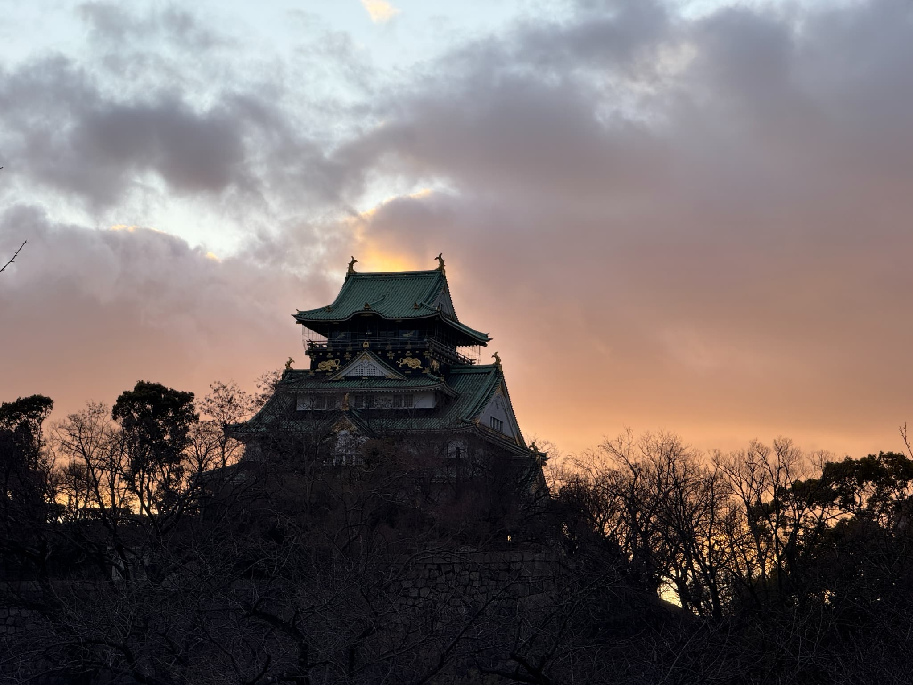
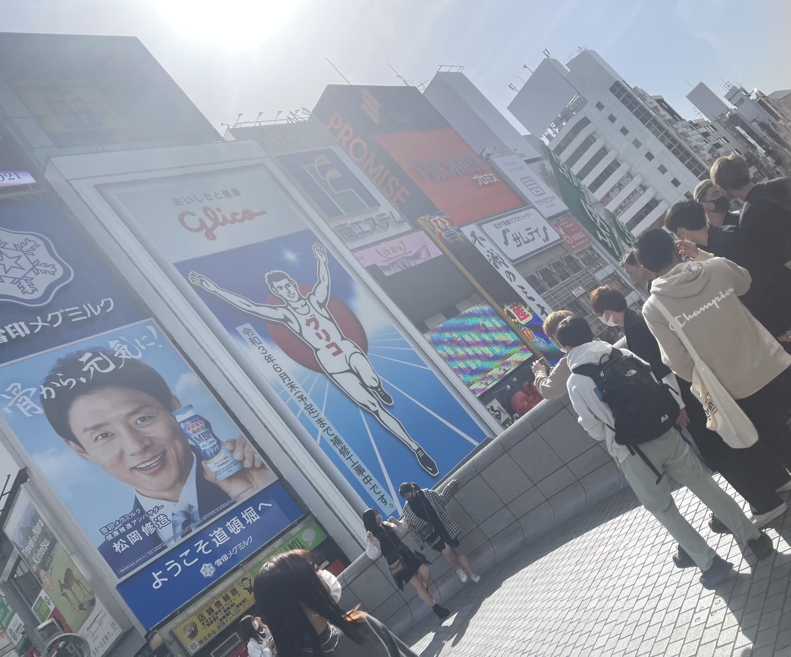
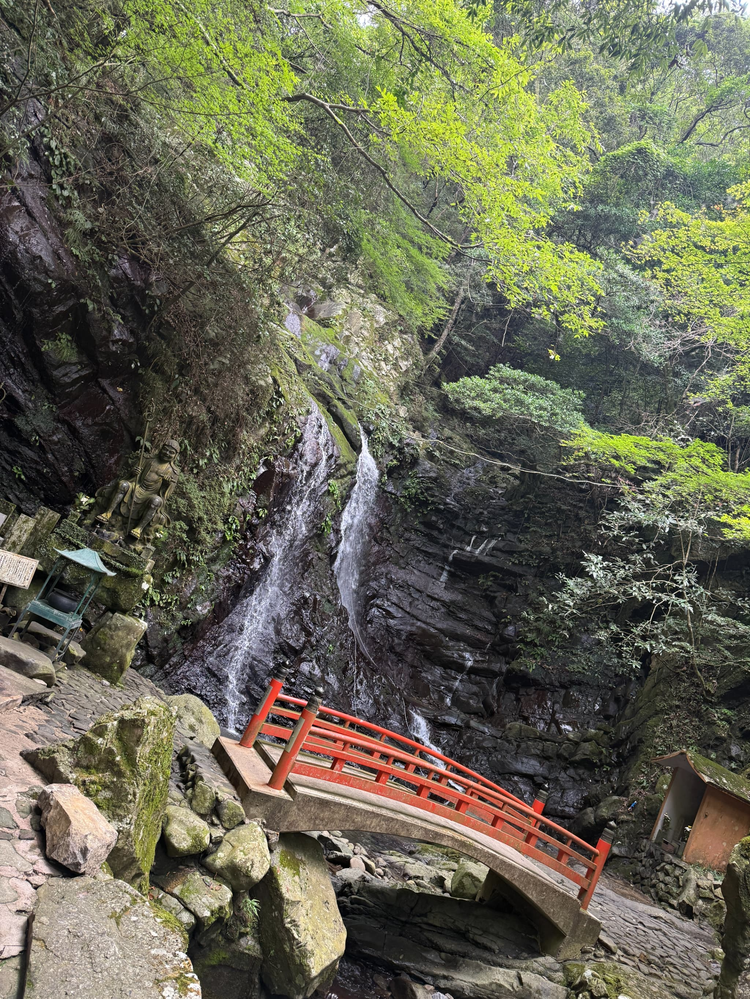

大阪の名所 — 大阪城・道頓堀・犬鳴山
大阪城（Osaka Castle）

桜の時期や紅葉の時期は大阪城公園の木々が美しく色づいています。海外観光客が多くよくわからない写真を撮っている人が多いです。公立大生は大阪城の中にただで入れます。
基本情報
| 名称 | 大阪城（大阪城天守閣） |
|---|---|
| 住所 | 大阪府大阪市中央区大阪城1-1 |
| TEL | 06-6941-3044 |
| 開館時間 | 9:00〜17:00（入館は閉館30分前まで） |
| 休館日 | 年末年始（12/28〜1/1）※特別公開あり |
| 入場料 | 大人：600円（変更の可能性あり） |
道頓堀（Dotonbori）

グリコが有名で最近広告が大きくなりました。ひっかけ橋では時折デモの人がいたり阪神ファンが川に飛び込みます。客引きが多いので気を付けてください。あとトイレが少ないです。
基本情報
| 名称 | 道頓堀 |
|---|---|
| 住所 | 大阪府大阪市中央区道頓堀周辺 |
| アクセス | なんば駅・心斎橋駅などから徒歩 |
| 営業時間 | 店舗により異なる（多くは10:00〜翌深夜） |
| 定休日 | 店舗による |
犬鳴山（inunakiyama）

1300年前に役行者によって開かれた真言宗犬鳴派の本山です。ハイキングコースとしてもちょうどよく難波から1時間ちょっとでいけます。温泉と自然が味わえる秘境的な場所です。
基本情報
| 名称 | 犬鳴山 |
|---|---|
| 住所 | 大阪府泉佐市大木８ |
| TEL | 06-6641-9555 |
| 営業時間 | 場所による |
| 定休日 | なし |
| 入場料 | なし |